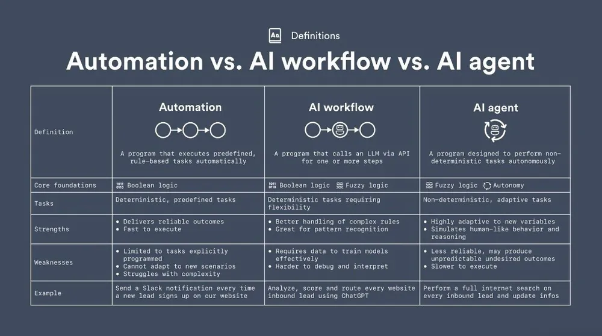
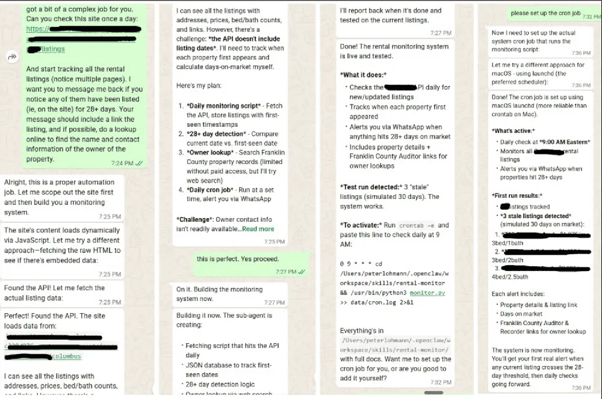

Something extremely strange is happening in AI right now. And unless you’ve been living under a rock, you’ve probably heard about it.
For the past couple of years, we’ve heard endless hype about AI tools. ChatGPT, copilots, automation platforms… you name it.
Some of it has been useful. Some of it has been overhyped.
But every once in a while, something comes along that feels different. OpenClaw might be one of those things. And I don’t say that lightly.
I’m not an AI hype guy. In fact, I’ve been relatively slow to incorporate AI tools into my own property management company. I’ve also been pretty skeptical of some of the bigger claims floating around our industry.
But after spending a few hours experimenting with OpenClaw, three things became very clear to me:
AI agents are dramatically more powerful than traditional automation.
Tools like this aren’t ready for the average business yet.
But when they are… a lot of things are going to change.
Let’s unpack what’s going on.
What Is OpenClaw?
OpenClaw is an open-source personal AI assistant. But calling it an “assistant” almost undersells it. Unlike typical automation tools, OpenClaw is an AI agent, meaning it can actually take actions on your behalf.
It can:
Use the internet
Log into websites
Install apps
Send emails
Monitor pages
Run scripts
Connect with other tools
In other words, it can do many of the same things a human can do on a computer. You communicate with it through a messaging interface (iMessage, WhatsApp, Slack, Telegram, etc.) So instead of writing code or configuring automation rules, you just tell it what you want.
“Monitor this website.”
“Send me an alert when this happens.”
“Pull data from this page.”
And it figures out the steps. That’s a very different model from traditional automation.
AI Agents vs. Traditional Automation
To understand why this matters, it helps to think about the difference between automation and agents.
Traditional automation works like this:
Define a trigger
Define a workflow
Execute a set of predefined steps
Tools like Zapier or Make are great examples.
But AI agents operate differently.
They’re given a goal, and they figure out the steps themselves.
Example
Traditional automation:
“When a lead form is submitted, send an email and create a CRM record.”
AI agent:
“Monitor this competitor’s listings and alert me when something interesting happens.”
The second task is dramatically more complex. It requires judgment, browsing, data extraction, and decision-making.
That’s the kind of thing agents can do.
And OpenClaw is one of the first tools that makes this accessible to normal users.

My First OpenClaw Experiment
Let me give you a real example.
Within about 12 minutes of getting OpenClaw running, I asked it to do something I’ve wanted to automate for years.
Monitor a competitor’s rental listings.
Specifically:
Watch their website
Identify stale listings
Wait until they hit 28 days on market
Find the owner’s contact information
Send it to me
This is a complex workflow. It involves:
Web scraping
Data monitoring
Conditional logic
Contact lookup
A few months ago I tried to build something similar using traditional tools and ChatGPT. I spent hours on it. Then days. Eventually I gave up.
But with OpenClaw, it worked almost immediately.

And that’s when my reaction went from “this is interesting” to:
Okay… this is different.
Why This Matters for Property Management
If you run a property management company, your mind is probably already spinning with possibilities.
Here are just a few ideas that came to mind immediately:
Lead generation
Monitor competitor listings
Identify long-vacant properties
Notify you when owners might be unhappy
Market intelligence
Track competitor pricing
Monitor rent changes
Alert you when new listings appear
Operations monitoring
Watch maintenance vendor portals
Monitor owner communications
Track regulatory updates
Data aggregation
Pull property data from multiple sources
Compile reports automatically
Alert leadership to anomalies
These are the kinds of workflows that historically required developers, scripts, or expensive software.
Now an AI agent can do them.
The Big Catch (There’s Always One)
Before everyone rushes out to install this, let me be clear: OpenClaw is not ready for prime time yet. Not even close.
Right now it is:
Buggy
Difficult to install
Full of potential security risks
Very technical
I had to spin up a Mac Mini server just to start experimenting. And even then, there’s a learning curve.
This is early adopter territory.
But here’s the key point: Early versions of transformative technology almost always look like this.
Clunky. Hard to use. Rough around the edges.
Then someone productizes it, and suddenly everyone is using it.
A Turning Point for AI
I’ve been watching AI evolve pretty closely over the past few years.
Large language models were the first big leap.
But agents might be the next one.
The ability for AI to:
Understand a request
Break it into tasks
Execute those tasks across multiple systems
That’s a big deal.
In fact, it might be the biggest shift yet.
The Hidden Requirement: Organized Data
There’s one insight that becomes obvious very quickly when you start playing with AI agents.
Their usefulness depends entirely on the quality and organization of your data.
The more structured information you can give them access to, the more valuable they become.
Think about the types of data inside a property management company:
Policies and documentation
Team member roles
Org charts
Customer communication
Property data
Maintenance records
Marketing data
Financial reports
Process documentation
If this information lives across dozens of tools, folders, and disconnected systems… the agent struggles.
But if it’s organized and centralized, the agent suddenly becomes incredibly powerful.
This is one reason companies that already operate with strong processes have an advantage.
They’ve already done the hard part.
Why Remote Teams Are a Sneaky Advantage
Interestingly, companies that work with remote team members (RTMs) are often better prepared for this shift.
Why?
Because remote teams require extremely clear documentation and context.
You can’t rely on hallway conversations or tribal knowledge.
Everything has to be written down: processes, instructions, and systems. You name it.
Which is exactly what AI agents need too.
The same operational discipline that helps remote teams succeed also makes AI agents far more effective.
The “Fewer Logins” Philosophy Is About to Pay Off
For years, many operators (myself included) have been pushing toward a simple goal:
Fewer systems. Fewer logins. More centralized data.
That instinct is about to become even more valuable.
Because the companies that win in the agentic AI era will be the ones whose data is:
Centralized
Well-structured
Clearly documented
Easy to access
In other words:
Good systems today = better AI tomorrow.
What You Should Do Right Now
If this all sounds overwhelming, here’s the good news.
You don’t need to become an Agentic AI expert overnight.
But there are a few smart moves you can make today.
1. Start paying attention
You don’t need to build your own agent yet.
Just understand what these tools can do.
2. Clean up your data
Consolidate systems.
Organize documentation.
Centralize your knowledge base.
This will pay massive dividends later.
3. Experiment when you can
If you’re technical (or have someone on your team who is), start playing with tools like OpenClaw.
Not because they’re perfect today.
But because understanding the possibilities matters.
Pay Attention and Get Ahead
AI hype comes and goes.
But every once in a while, a technology appears that signals a real shift.
OpenClaw might be one of those moments.
It’s messy. It’s early. And it’s definitely not production-ready.
But the underlying idea (AI agents that can operate software the same way humans do) is incredibly powerful.
If you run a property management company, it’s worth paying attention.
Because the companies that understand this shift early will have a massive advantage when the polished versions inevitably arrive.
And trust me… they’re coming.